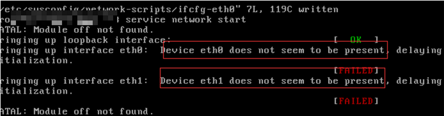

故障-启动网卡失败
问题症状
在服务器中，启动网卡提示如下信息。
Device eth0 does not seem to be present，delaying initialization
系统显示类似如下。

解决方案
执行如下命令，加载网卡模块。
modprobe xen-netfront
执行如下命令，重启网卡成功。
/etc/init.d/network restart
在/etc/rc.local中写入以上两条命令，设置开机启动。